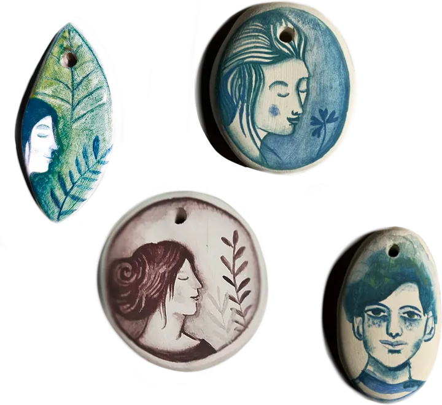
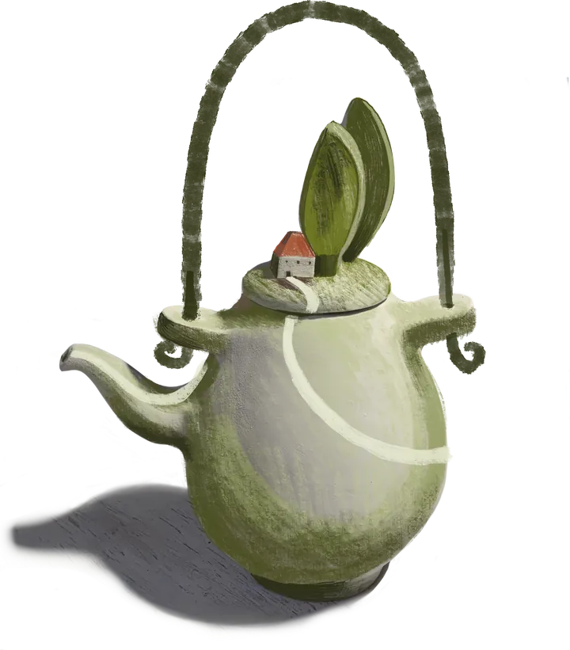

Lo shop di Baruch sta prendendo forma.
Presto qui troverai stampe, pattern esclusivi e oggetti di uso quotidiano decorati a mano. Se desideri un’illustrazione o un oggetto su misura, scrivimi: ne parliamo insieme.
Scrivimi un messaggio

